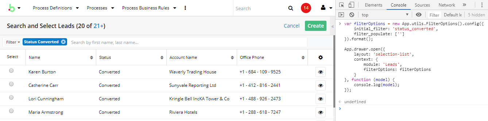

Methods
app.drawer.open(layoutDef, onClose)
Parameters
layoutDef.layout: (required) The id of the layout to loadlayoutDef.context: Các data được truyền vào view. Tại view, lấy data được truyền vào bằng cáchthis.context.get('[data key]');onClose: function callback, xử lý dữ liệu trả về khi drawer đòng.
Đóng drawer đang mở
app.drawer.close()
Đóng toàn bộ các drawer
app.drawer.reset()
Tạo drawer selection list
Chọn record từ 1 module và trả về dữ liệu để xử lý. ví dụ chọn 1 record từ module meeting
App.drawer.open({
layout: 'selection-list',
context: {
// Add fields want to get when success, this is optional, you can use by default
fields: ['meeting_type','name','id'],
module: 'Meetings'
}
}, function (model) {
//xử lý giá trị được trả về
console.log(model);
});
Tạo drawer selection list với filter
Ví dụ tạo drawer selection module Lead với filter là status = converted. Tên filter mình đặt là status_converted.
-
Định nghĩa filter
-
Kiểm tra và khai báo field cần filter
Mở file
modules/Leads/clients/base/filters/default/default.phpvà thêm vào cuối file như sau:$viewdefs['Leads']['base']['filter']['default']['fields']['status'] = array(); -
Khai báo định nghĩa filter
Tạo file
status_converted.phptheo đường dẫn saumodules/Leads/clients/base/filters/status_converted/status_converted.php
-
<?php
$viewdefs['Leads']['base']['filter']['status_converted']['filters'][] = array(
'id' => 'status_converted',
'name' => 'Status Converted',
'filter_definition' => array(
array(
'status' => array(
'$in' => array('Converted'),
)
)
),
'editable' => false,
'is_template' => false
);
Ở đây ta khai báo filter cố định 'editable' => false nên truyền cứng luôn các filter vào '$in' => array('Converted').
Nếu không muốn set cứng thì có thể để 'editable' => true và truyền giá trị filter vào trong lúc gọi xử lý.
- Mở drawer với filter đã khai báo
var filterOptions = new App.utils.FilterOptions().config({
initial_filter: 'status_converted',
filter_populate: ['']
}).format();
App.drawer.open({
layout: 'selection-list',
context: {
module: 'Leads',
filterOptions: filterOptions
}
}, function (model) {
//xử lý giá trị được trả về
console.log(model);
});
Nếu ở trên ta khai báo filter cho phép edit 'editable' => true thì ta có thể truyền giá trị filter vào như sau:
var filterOptions = new App.utils.FilterOptions().config({
initial_filter: 'status_converted',
filter_populate: {
status: 'Converted'
}
}).format();
App.drawer.open({
layout: 'selection-list',
context: {
module: 'Leads',
filterOptions: filterOptions
}
}, function (model) {
//xử lý giá trị được trả về
console.log(model);
});

Theo các hướng dẫn trên, ta hoàn toàn có thể gọi drawer với mọi layout tùy ý bằng việc truyền vào tên của layout